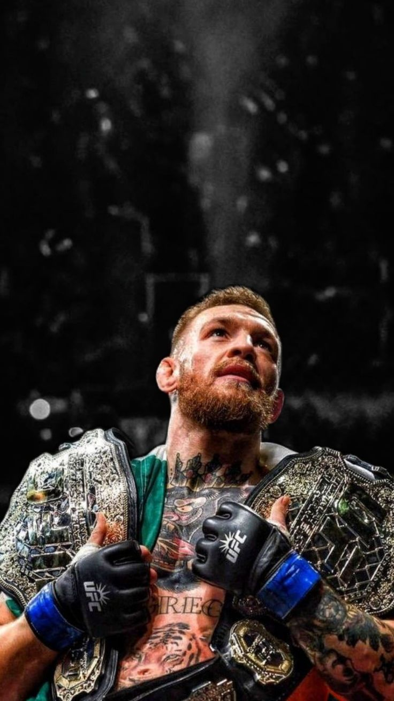

.jpg)
Khabib Nurmagomedov (né le 20 septembre 1988 à Sildi, Daghestan) est un ancien combattant russe d’arts martiaux mixtes, champion incontesté de la division des poids légers de l’UFC et premier champion du monde de l’UFC originaire de Russie.
Il a terminé sa carrière professionnelle avec un bilan parfait de 29 victoires et 0 défaite, ce qui est extrêmement rare dans ce sport. Champion des poids légers de l’UFC entre 2018 et 2021, il a réussi trois défenses de titre et s’est illustré par son style de lutte très dominant. Parmi ses victoires les plus célèbres figurent celles contre Conor McGregor, Dustin Poirier et Justin Gaethje. Il a pris sa retraite en 2020 en restant invaincu, laissant une trace majeure dans l’histoire du MMA.

Anderson Silva est un combattant brésilien de arts martiaux mixtes (MMA), né le 14 avril 1975 à São Paulo. Ancien champion poids moyens de l’Ultimate Fighting Championship (UFC). En 2023, il a été intronisé au UFC Hall of Fame
Il a dominé la catégorie des poids moyens pendant plusieurs années et a été champion de l’UFC de 2006 à 2013, avec 10 défenses de titre consécutives, un record dans cette division. Connu pour son style spectaculaire, sa précision en striking et ses esquives impressionnantes, il a battu de grands combattants comme Rich Franklin, Chael Sonnen et Vitor Belfort. Son bilan en MMA est de 34 victoires, 11 défaites et 1 no contest, et il est largement considéré comme une légende du sport.

Daniel Cormier (né le 20 mars 1979 à Lafayette, Louisiane) est un ancien combattant américain d’arts martiaux mixtes. Il est reconnu pour avoir été double champion de l’UFC, remportant simultanément les ceintures des poids lourds et mi-lourds.
Titres majeurs en MMA
Champion poids lourds de l’Ultimate Fighting Championship (2018)
Champion poids mi-lourds de l’Ultimate Fighting Championship (2015–2018, puis brièvement 2018)
Champion du tournoi poids lourds du Strikeforce (2012)
Il fait partie des rares combattants à avoir été champion dans deux catégories de poids différentes à l’UFC en même temps.

Conor McGregor (né le 14 juillet 1988 à Dublin) est un combattant irlandais d’arts martiaux mixtes (MMA) et ancien double champion de l’Ultimate Fighting Championship. Premier athlète de l’organisation à détenir simultanément deux ceintures mondiales.
Conor McGregor possède un bilan de 22 victoires pour 6 défaites en MMA. La majorité de ses victoires sont obtenues par KO ou TKO (19), ce qui montre sa grande puissance de frappe. L’un de ses moments les plus célèbres reste son combat contre José Aldo lors de UFC 194, où il a remporté la ceinture poids plume avec un KO en seulement 13 secondes, le plus rapide de l’histoire pour un combat de titre à l’UFC.

Jon Jones est un combattant américain d’arts martiaux mixtes (MMA), né le 19 juillet 1987 à Rochester (New York). Considéré comme l’un des plus grands athlètes de l’histoire de l’UFC, il a dominé les divisions mi-lourds et poids lourds.
il possède l’un des meilleurs palmarès du sport avec 27 victoires, 1 défaite et 1 no contest. Sa seule défaite officielle est due à une disqualification pour coup illégal, et non à un combat perdu normalement. Malgré plusieurs controverses hors de la cage, Jon Jones reste pour beaucoup l’un des GOAT (Greatest of All Time) du MMA grâce à sa domination et au nombre de grands adversaires qu’il a battus.

José Aldo da Silva Oliveira Júnior (né le 9 septembre 1986 à Manaus, Brésil) est un ancien combattant d’arts martiaux mixtes brésilien, considéré comme l’un des plus grands poids plumes de l’histoire de l’Ultimate Fighting Championship.
José Aldo est un combattant brésilien de MMA considéré comme l’un des meilleurs poids plume de l’histoire. Au cours de sa carrière professionnelle, il a disputé 39 combats, avec un bilan de 31 victoires et 8 défaites. Parmi ses victoires, 17 ont été obtenues par KO ou TKO, 2 par soumission et 12 par décision, ce qui montre à la fois sa puissance de frappe et sa solidité technique.